00이 매뉴얼에 대하여
설비펌프 용량 자동선정 시스템은 건물에 들어가는 펌프 8종 — 냉난방 순환 2종 · 오·배수 2종 · 급탕 순환 2종 · 급수 2종 — 의 유량 · 전양정 · 축동력 · 전동기 마력을 산정하고 A4 산출서를 만듭니다. 근거는 기계설비 기술기준 국토교통부 고시 제2021-851호(제2026-360호로 타법개정, 2026. 7. 8. 시행) 별표 1 · 5 · 6 · 7 · 8과 건축물의 에너지절약설계기준(2026. 7. 8. 시행) 제8조 · 제9조이며, 기준에 수치가 없는 계수(여유율 · 단위손실 · 효율 기본값 · PIT 200 % · 단위 열손실 30 W/m 등)는 MANMIN 참고값으로 표시합니다.
| 항목 | 내용 |
|---|---|
| 대상 프로그램 | 설비펌프 용량 자동선정 시스템 MANMIN Ver-5.0(v5.0.3) — 탭 막대 「📘 매뉴얼」 버튼으로 이 문서가 열립니다 |
| 접속 주소 | manminkim-eng.github.io/Booster-Pump |
| 매뉴얼 판 | Ver-5.0 (화면 표기와 같은 판 번호, 초판) · 2026-10-14 · 작성 김만민 건축사(㈜대성건축사사무소) |
| 내려받기 | PDF(A4) · 설비펌프 용량 자동선정 시스템 열기 |
| 예제 | 본문 그림은 예제 A(업무시설 10층 사옥 — 8종 모두 산정)로 캡처했습니다. 난방 순환펌프 641.67 LPM · 14.3 m · 4.123 kW → 7.5 HP, 자동부스터 59.18 m → 토출압 550 kPa 이상 경고. 8종 결과는 부록 A2 |
| 근거 기준 | 기계설비 기술기준 국토교통부 고시 제2021-851호(제2026-360호로 타법개정, 2026. 7. 8. 시행) 별표 1 2.6 · 2.8 / 별표 5 2.1.3 · 2.1.6 · 2.1.7 · 2.2.6 / 별표 6 2.1.3 / 별표 7 2.2.5 / 별표 8 2.5 · 건축물의 에너지절약설계기준(2026. 7. 8. 시행) 제8조제2호나목 · 제9조제4호 — LawMCP 원문 대조(2026-10-14) |
| 읽는 순서 | 처음이면 1장 → 2장(따라하기) → 필요할 때 3장(화면별 상세). 장비 선정 전에는 4장(기술기준) · 5장(작업 방법) |
01한눈에 보기
설치 없이 브라우저에서 바로 실행되는 단일 페이지 앱(PWA)입니다. 입력한 내용은 내 PC 브라우저 안에서만 계산되며 서버로 전송되지 않습니다.
무엇을 산정하나
유량 Q · 전양정 H · 축동력 P(kW) · 선정 마력(HP) · 구경 · 전원 · 수량
펌프 8종
난방 · 냉방 순환 / PIT · 우수 배수 / 급탕 순환 · 재순환 / 고가수조 양수 · 자동부스터
근거
기계설비 기술기준 별표 1 · 5 · 6 · 7 · 8 · 에너지절약설계기준 제8조 · 제9조
1-1. 화면 구성
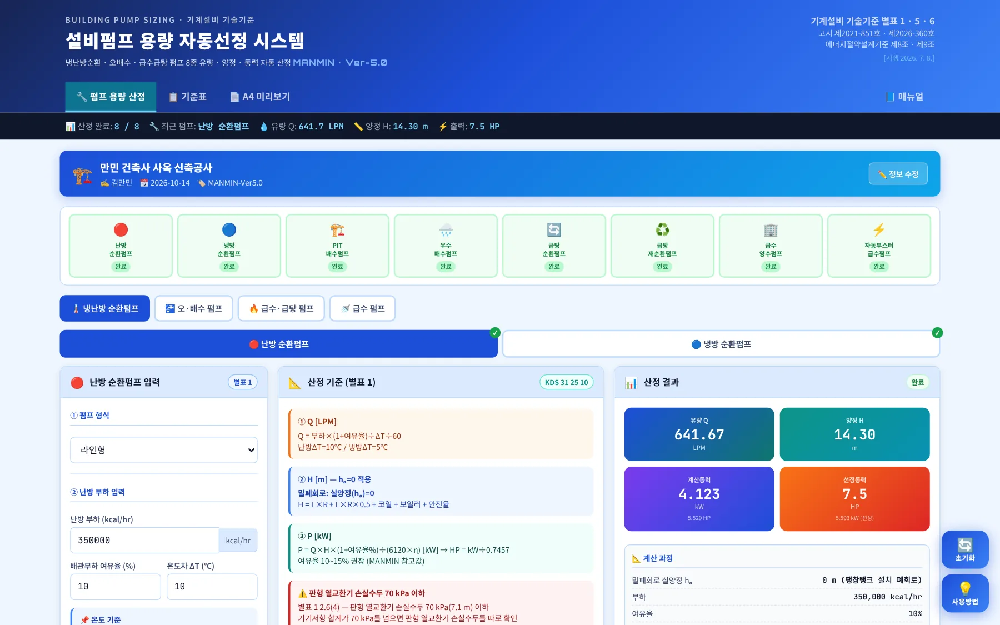
12345678910- 1작업 탭: 펌프 용량 산정 · 기준표 · A4 미리보기 · 매뉴얼
- 2요약 스트립: 완료 수 · 최근 펌프 · Q · H · 출력
- 3프로젝트 배너 — 공사명 · 작성자 · 날짜
- 48종 진행 상태(누르면 해당 펌프로 이동)
- 5펌프 분류 탭 4개
- 6서브탭(난방/냉방 등 — 결과 따로 저장)
- 7입력
- 8산정 기준(식 · 근거)
- 9산정 결과
- 10오른쪽 아래 「초기화」 · 「사용방법」
| 영역 | 내용 |
|---|---|
| 왼쪽 — 입력 | 펌프 형식 → 부하 · 유량 → 양정(배관 길이 · 단위손실 · 기기저항) → 안전율 · 효율 · 전동기 여유율 → 제어방식 · KS 인증 · A/B특성 효율 |
| 가운데 — 산정 기준 | 이 펌프에 쓰는 식과 근거 조항, MANMIN 참고값 구분 |
| 오른쪽 — 결과 | 유량 · 양정 · 계산동력(kW) · 선정동력(HP) → 계산 과정 → 펌프 선정 사양 → 제어방식 · KS 정보 |
1-2. 작업 탭·근거 표시
- 1펌프 용량 산정
- 2기준표 — 구경 · 온도 · HP 환산 · 급수 기준
- 3A4 미리보기 — 산출서 · 인쇄 · JPG
- 4매뉴얼(이 문서)
- 5근거: 기술기준 별표 1 · 5 · 6 · 고시 제2021-851호 · 제2026-360호 · 에너지절약설계기준 제8조 · 제9조
1-3. 설치·보관·매뉴얼
| 항목 | 내용 |
|---|---|
| 설치 | 주소창의 설치 아이콘 또는 휴대전화 「홈 화면에 추가」로 앱처럼 쓸 수 있습니다. 한 번 연 뒤에는 인터넷 없이도 계산됩니다 |
| 결과 보관 | 8종 결과는 서브탭마다 따로 저장되어 A4에 함께 나옵니다. 문서로 남기려면 A4 산출서(PDF · JPG)를 쓰십시오 |
| 매뉴얼 | 탭 막대 오른쪽 끝 「📘 매뉴얼」 — 인터넷 연결 시 새 창으로 열립니다. 좁은 화면에서는 탭 막대를 좌우로 밀면 보입니다 |
| 업데이트 | 새 버전이 올라오면 다음 접속 때 자동으로 바뀝니다. 화면이 예전 그대로면 새로 고침(Ctrl+F5) |
021분 따라하기
예제 A의 난방 순환펌프로 6단계를 따라 하면 641.67 LPM · 14.3 m · 4.123 kW → 7.5 HP가 나옵니다. 나머지 7종도 같은 순서입니다.
- ① 펌프 선택펌프 분류 탭에서 「🌡️ 냉난방 순환펌프」, 서브탭에서 「🔴 난방 순환펌프」를 고릅니다. 위 진행 상태 바를 눌러도 됩니다(3-1).
- ② 부하 입력펌프 형식(라인형)을 고르고 난방 부하 350,000 kcal/h · 배관부하 여유율 10 % · ΔT 10℃를 넣습니다(3-2).
- ③ 양정 입력왕복 배관 200 m · 단위손실 0.02 mAq/m · 코일 2 m · 보일러 5 m · 안전율 10 % · 효율 0.40 · 전동기 여유율 10 %를 넣습니다. 입력하는 대로 자동 계산됩니다.
- ④ 산정 결과유량 641.67 LPM · 전양정 14.3 m · 계산동력 4.123 kW → 선정동력 7.5 HP(3-4).
- ⑤ 8종 진행서브탭과 분류 탭을 바꿔 가며 냉방 · PIT · 우수 · 급탕 순환 · 재순환 · 양수 · 부스터를 산정합니다. 진행 상태 바에 「완료」가 8개 켜집니다.
- ⑥ A4 산출서「📄 A4 미리보기」에서 「🖨️ 인쇄 / PDF」 또는 「📸 JPG 저장」으로 8종 산출서를 남깁니다(3-10).
| 항목 | 예제 A 난방 순환펌프 |
|---|---|
| 밀폐회로 실양정 hₐ | 0 m (팽창탱크 설치 폐회로) |
| 부하 | 350,000 kcal/hr |
| 여유율 | 10% |
| ΔT | 10℃ |
| → Q | 641.667 LPM |
| 배관손실 (L×R) | 4.000 m |
| 배관부속 (×0.5) | 2.000 m |
| 코일 저항 | 2 m |
| 보일러 저항 | 5 m |
| 기기저항 합계 | 7.000 m (69 kPa) |
| 소계 | 13.000 m |
| 안전율(10%) | 1.300 m |
| → H (전양정) | 14.300 m |
| 전동기 여유율(10%) | 10% (적정) |
| → P 계산 | 4.123 kW = 5.529 HP |
| → 선정동력 | 7.5 HP |
03화면별 기능 상세
3-1. 진행 상태·분류 탭
- 1난방 순환펌프
- 2냉방 순환펌프
- 3PIT 배수펌프
- 4우수 배수펌프
- 5급탕 순환펌프
- 6급탕 재순환펌프
- 7고가수조 양수펌프
- 8자동부스터 급수펌프
- 9펌프 분류 탭 — 냉난방 · 오·배수 · 급수·급탕 · 급수
진행 상태 바의 칸을 누르면 그 펌프의 분류 탭 · 서브탭으로 바로 이동합니다. 결과는 펌프마다 따로 저장되므로 서브탭을 바꿔도 앞서 산정한 결과는 남습니다.
3-2. 냉난방 순환펌프 입력
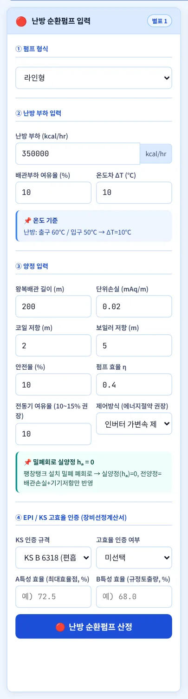
12345678910- 1① 펌프 형식
- 2② 난방 부하
- 3배관부하 여유율 · ΔT
- 4왕복 배관 길이 · 단위손실
- 5코일 · 보일러(냉동기) 저항
- 6안전율 · 펌프 효율
- 7전동기 여유율 · 제어방식
- 8④ KS 인증 · 고효율 인증
- 9A · B특성 효율
- 10산정 버튼
| 항목 | 내용 |
|---|---|
| 유량 | Q = 부하 × (1 + 여유율) ÷ ΔT ÷ 60 [LPM] — 물 1 kcal/kg·℃ · 1 kg/ℓ |
| ΔT | 서브탭을 바꾸면 난방 10℃ · 냉방 5℃로 다시 채워집니다 |
| 양정 | 밀폐회로라 실양정 hₐ = 0 — 배관손실(L × R) + 부속(L × R × 0.5) + 코일 + 보일러(냉동기) + 안전율 |
| 기기저항 70 kPa | 코일 + 보일러 합계가 70 kPa를 넘으면 경고 — 판형 열교환기 손실수두 70 kPa 이하(별표 1 2.6(4)) 확인 |
| 제어방식 | 대수 · 가변속 제어 권장(에너지절약설계기준 제9조제4호) · 「대수분할 제어」를 고르면 운전 대수 n 입력란이 나타나고 펌프 1대 유량 = 전체 Q ÷ n으로 계산, 수량은 「n대 대수제어(예비 생략 가능 — 별표 1 2.8(5))」(v5.0.3) |
| KS · 효율 | 펌프 효율은 KS 규격 효율 이상(별표 1 2.8(1)) · KS 표시인증 또는 KS 효율 이상(에너지절약설계기준 제8조제2호나목) — A/B특성 효율은 장비선정계산서 기재용 |
3-3. 산정 기준 상자
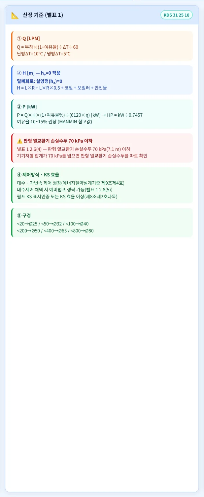
펌프마다 가운데 칸에 쓰는 식 · 근거 조항 · 구경 표가 나옵니다. 기준에 수치가 없는 값은 「MANMIN 참고값」으로 적혀 있습니다.
3-4. 산정 결과
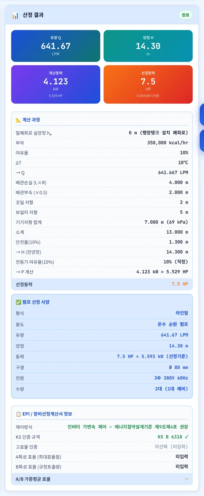
1234- 1유량 · 양정 · 계산동력(kW) · 선정동력(HP)
- 2계산 과정
- 3펌프 선정 사양 — 형식 · 용도 · 구경 · 전원 · 수량
- 4제어방식 · KS · A/B특성 효율
- 1Q 1,100 LPM · H 12.1 m · 10 HP
- 2선정 사양
| 항목 | 내용 |
|---|---|
| 선정동력 | 계산동력(HP)의 바로 위 표준 마력(1/20 ~ 20 HP). 20 HP를 넘으면 「20+」로 표시 |
| 전원 | ¼ HP 이하 1Φ 220V · 그 이상 3Φ 380V |
| 구경 | 유량 구간표(기준표 탭) — 배관 호칭지름 산정(별표 8)과는 별개인 펌프 토출구 참고값 |
| 수량 | 순환 · 양수 2대(1대 예비) · 배수 2대 교대운전 · 부스터는 입력 대수 병렬 |
3-5. 오·배수 펌프
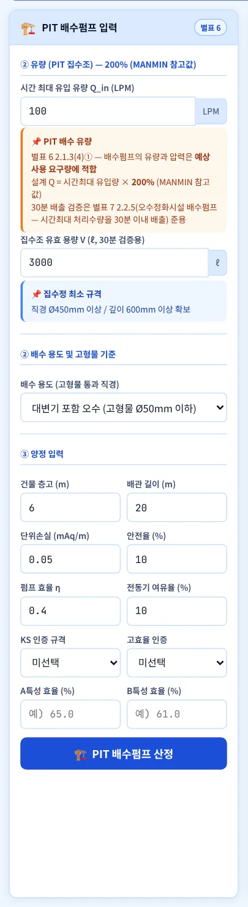
123456- 1시간 최대 유입량
- 2집수조 유효 용량(30분 검증)
- 3배수 용도 — 고형물 Ø50 / Ø25
- 4층고 · 배관 길이
- 5단위손실 · 안전율
- 6효율 · 전동기 여유율
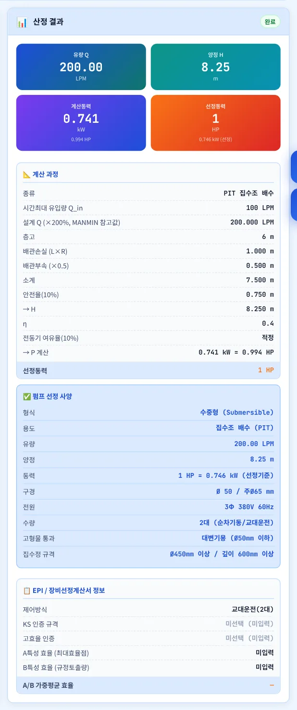
123- 1유량 · 양정 · 동력
- 2계산 과정
- 3고형물 통과 · 집수정 규격
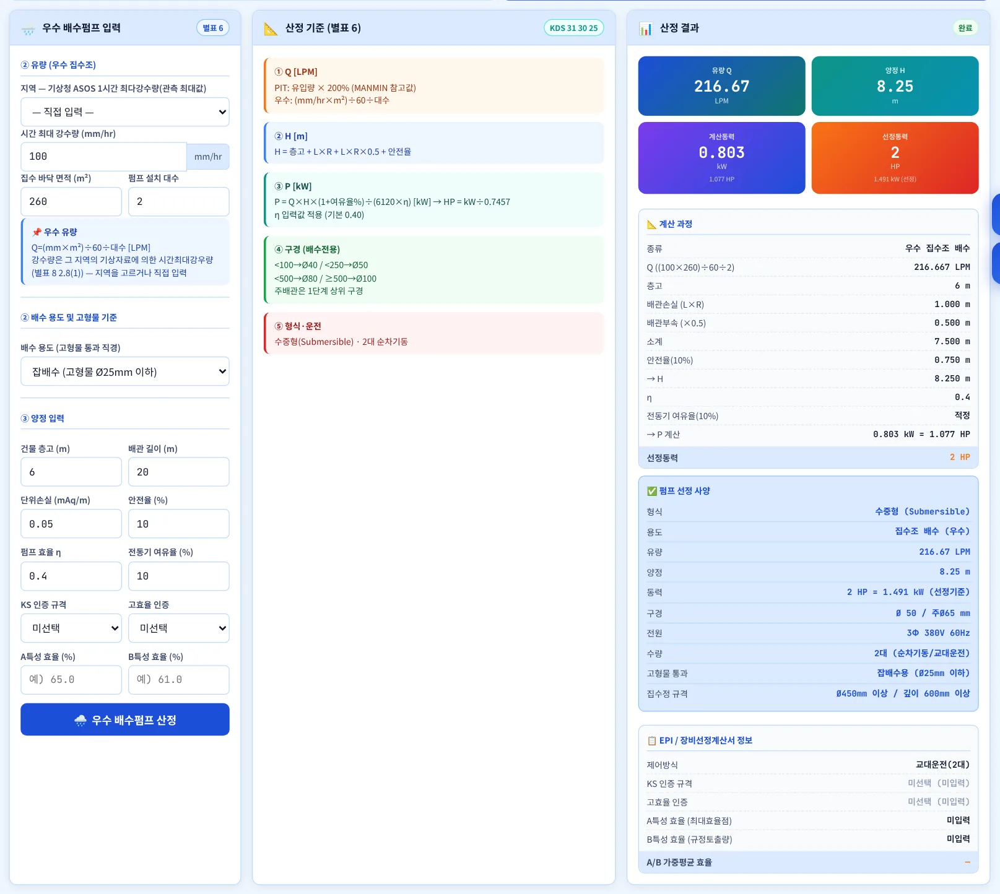
123- 1시간 최대 강수량
- 2집수 면적 · 설치 대수
- 3우수 결과
| 항목 | 내용 |
|---|---|
| PIT 유량 | 설계 Q = 시간최대 유입량 × 200 % (MANMIN 참고값). 별표 6 2.1.3(4)①은 「예상 사용 요구량에 적합」하도록만 정합니다 |
| 30분 검증 | 집수조 용량을 설계 Q로 30분 안에 비우는지 확인 — 오수정화시설 배수펌프 기준(별표 7 2.2.5) 준용 |
| 우수 유량 | Q = 강수량[mm/h] × 면적[㎡] ÷ 60 ÷ 대수 [LPM] — 강수량은 지역 시간최대강우량(별표 8 2.8(1)). 「지역」 목록(기상청 ASOS 1시간 최다강수량 관측 최대값 69곳 · 우수관경 산정 시스템과 같은 자료)에서 고르거나 직접 입력(v5.0.3) |
| 고형물 | 대변기용 Ø50 mm 이하 · 그 외 Ø25 mm 이하 구형 고형물 처리(별표 6 2.1.3(2)③④) |
| 집수정 · 대수 | 직경 450 mm · 깊이 600 mm 이상, 상시 유입은 2대 이상(1대 예비)(별표 6 2.1.3(4)②③) |
| 효율 | PIT · 우수 모두 입력한 η를 씁니다(v5.0.1 — 예전 판은 우수 0.30 고정) |
3-6. 급탕 순환·재순환 펌프
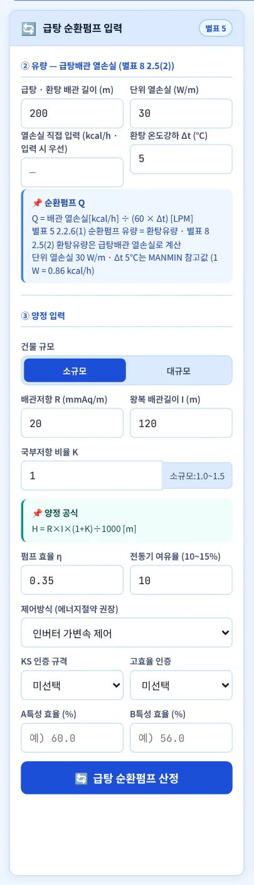
1234567- 1배관 길이 · 단위 열손실
- 2열손실 직접 입력 · 환탕 Δt
- 3순환 Q 근거
- 4건물 규모(K · R 기본값)
- 5배관저항 R · 왕복 길이 I
- 6국부저항 비율 K
- 7효율 · 전동기 여유율
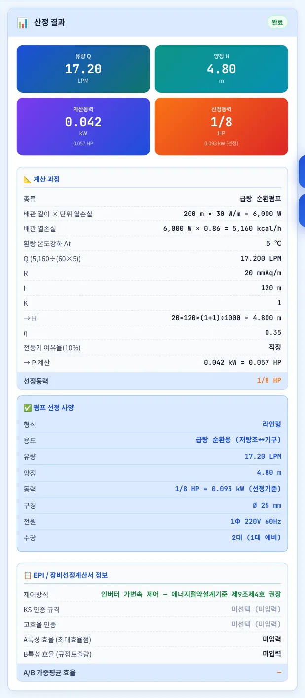
12- 1유량 · 양정 · 동력
- 2열손실 → 유량 계산 과정
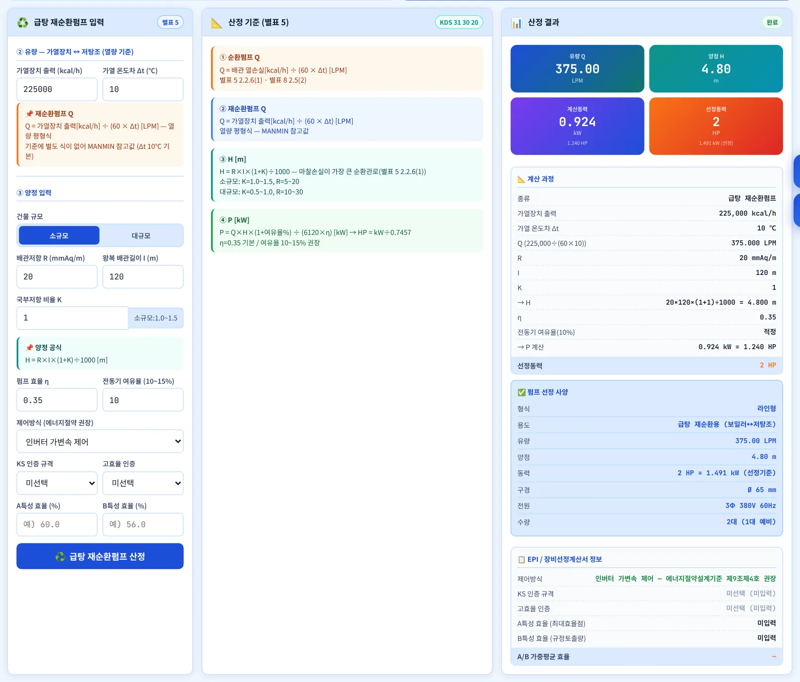
12- 1가열장치 출력 · 가열 Δt
- 2재순환 결과
| 항목 | 내용 |
|---|---|
| 순환 유량 | Q = 배관 열손실[kcal/h] ÷ (60 × Δt) — 별표 5 2.2.6(1) 순환펌프 유량 = 환탕유량, 별표 8 2.5(2) 환탕유량은 급탕배관 열손실로 계산 |
| 열손실 | 배관 길이 × 단위 열손실(W/m) × 0.86 = kcal/h. 30 W/m · Δt 5℃는 MANMIN 참고값 — 보온 두께 · 관경별로 구한 값이 있으면 「직접 입력」 |
| 재순환 유량 | Q = 가열장치 출력[kcal/h] ÷ (60 × Δt) — 가열장치 ↔ 저탕조 열량 평형식(MANMIN 참고값) |
| 양정 | H = R × I × (1 + K) ÷ 1000 — 마찰손실수두가 가장 큰 순환관로(별표 5 2.2.6(1)) |
| 정지 | 급탕하지 않을 때 순환펌프를 자동이나 수동으로 정지시킬 수 있어야 함(별표 5 2.2.6(2)) |
3-7. 급수 펌프
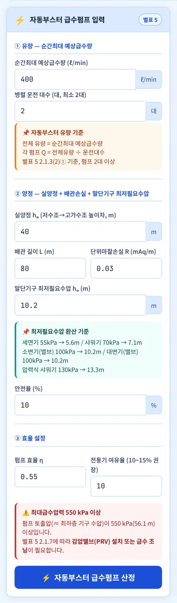
12345678- 1순간최대 예상급수량
- 2병렬 운전 대수(최소 2대)
- 3별표 5 2.1.3(2) 기준
- 4실양정 hₐ
- 5배관 길이 · 단위마찰손실
- 6말단기구 최저필요수압 hₒ
- 7효율 · 전동기 여유율
- 8550 kPa 경고
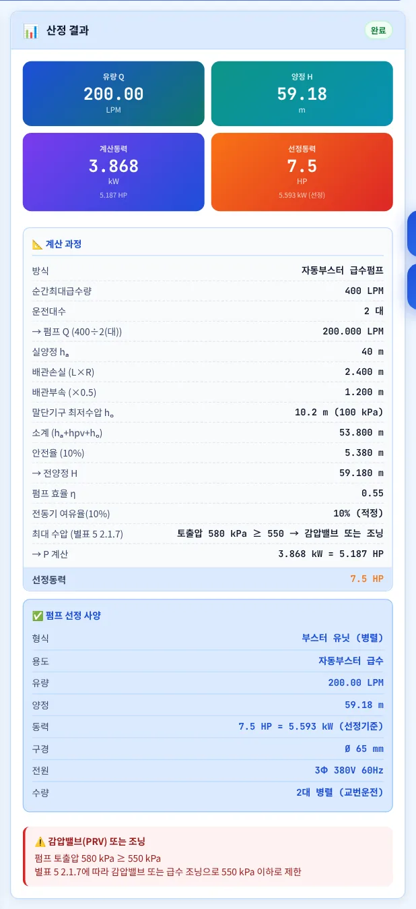
123- 1유량 · 양정 · 동력
- 2계산 과정 · 토출압 판정
- 3감압밸브 · 조닝 안내
| 항목 | 내용 |
|---|---|
| 고가수조 양수 | 유량 = 시간최대 예상급수량, 예비펌프로 교대 운전(별표 5 2.1.3(1)) |
| 자동부스터 | 유닛 전체 유량 = 순간최대 예상급수량, 펌프 2대 이상(별표 5 2.1.3(2)) — 펌프 1대 Q = 전체 ÷ 대수 |
| 양정 | H = hₐ + 배관손실(L × R × 1.5) + hₒ + 안전율 — hₒ는 위생기구 최저필요수압(별표 5 2.1.6 표 2) |
| 550 kPa | 위생기구 수압 550 kPa 이상이면 감압밸브 또는 급수 조닝(별표 5 2.1.7). 자동부스터는 펌프 토출압(전양정 × 9.807)으로 판정 — 예제 A 59.18 m ≈ 580 kPa → 경고 |
| 고가수조 | 토출압이 기구에 걸리지 않으므로 이 앱은 판정하지 않습니다 — 고가수조에서 최하층 기구까지 낙차로 따로 확인 |
3-8. 기준표 탭
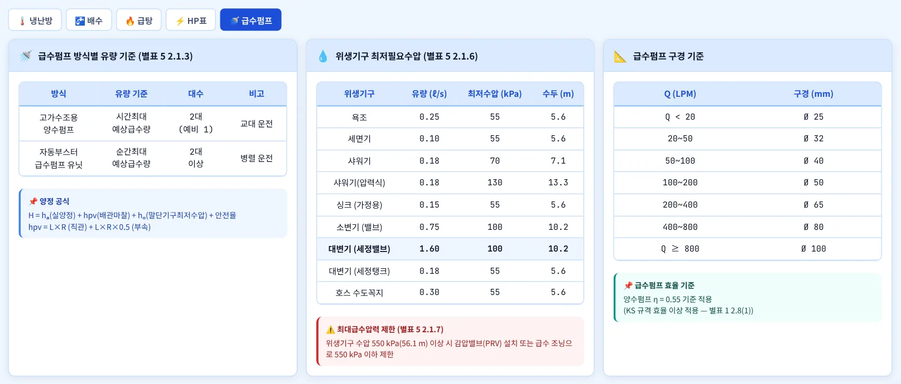
123- 1기준표 5종 — 냉난방 · 배수 · 급탕 · HP표 · 급수펌프
- 2방식별 유량 기준(별표 5 2.1.3)
- 3위생기구 최저필요수압(별표 5 2.1.6)
「⚡ HP표」는 표준 마력 · kW · 전원을, 「🌡️ 냉난방」 · 「🚰 배수」는 유량별 구경과 운전 온도를 보여 줍니다. 「🚰 배수」의 「지역별 시간최대강우량」은 기상청 ASOS 69곳 값(관측 최대값, ~2025)입니다(v5.0.3 — 예전 판의 출처 없는 5곳 표를 교체).
3-9. 사용방법 창
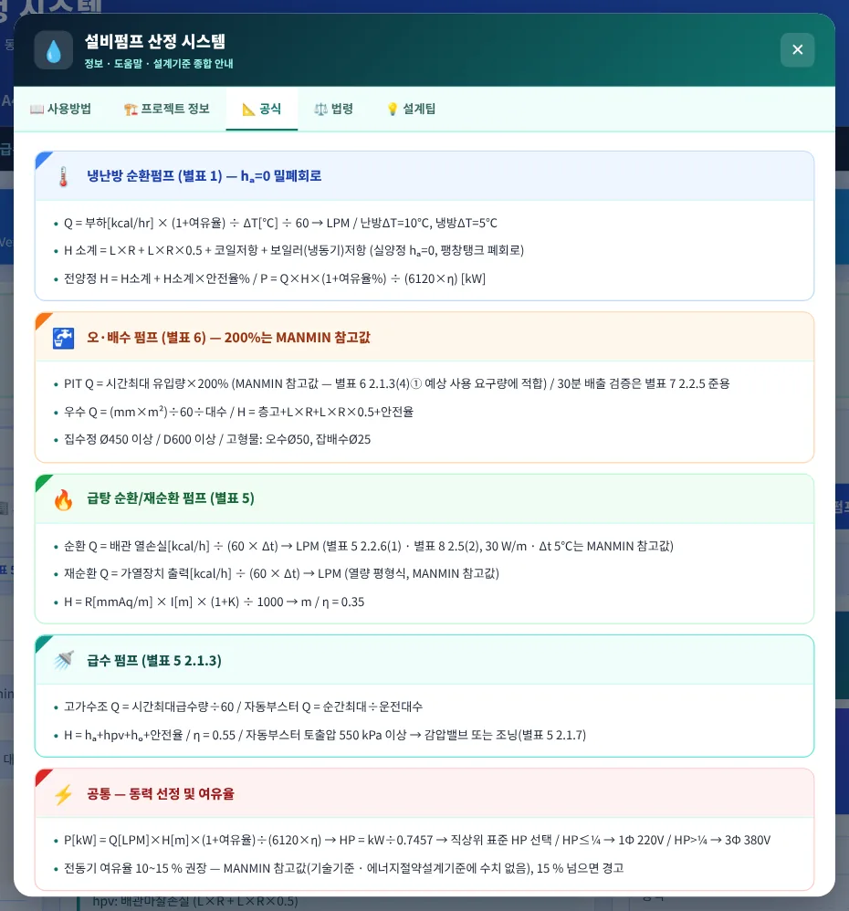
사용방법 창에는 웹 사용법 · 프로젝트 정보 · 공식 · 법령 · 설계팁 탭이 있습니다. 프로젝트 정보(공사명 · 작성자 · 작성일)는 A4 산출서 표제에 들어갑니다.
3-10. A4 미리보기·출력
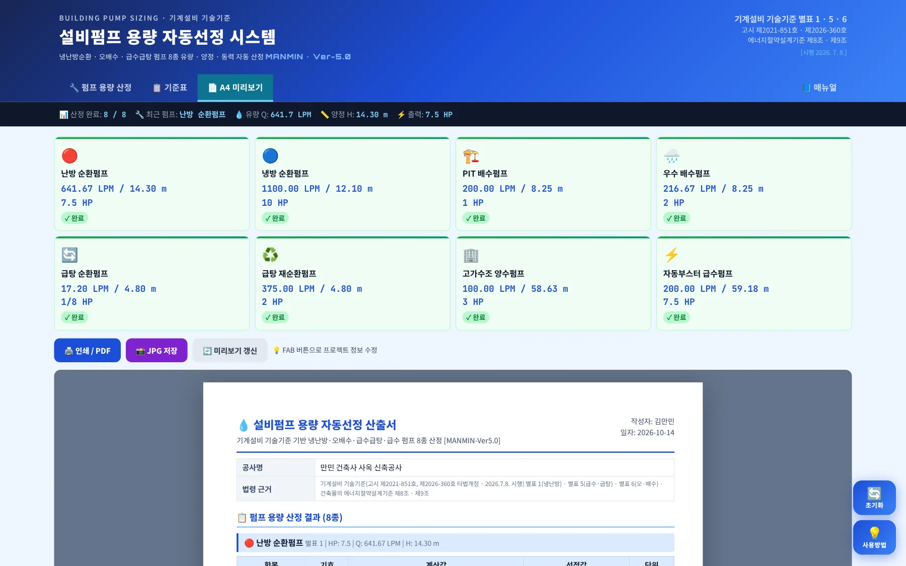
1234- 18종 요약 카드
- 2인쇄 / PDF
- 3JPG 저장
- 4A4 산출서
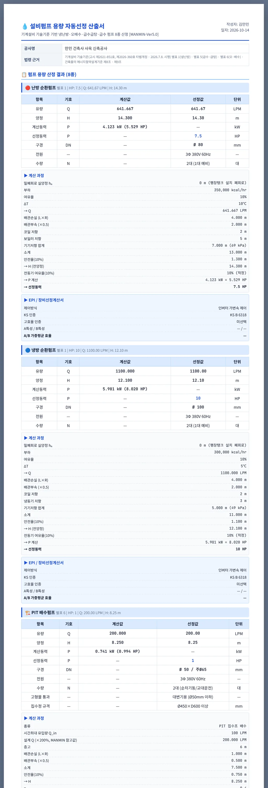
123- 1공사명 · 법령 근거
- 2펌프별 결과표
- 3계산 과정
산정한 펌프만 순서대로 나오며, 펌프마다 결과표 · 계산 과정 · 제어방식 · KS · A/B특성 효율이 한 묶음으로 쪽을 넘기지 않게 배치됩니다.
3-11. 휴대전화 화면
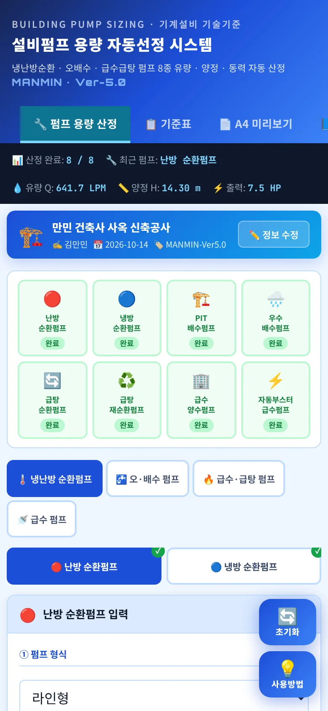
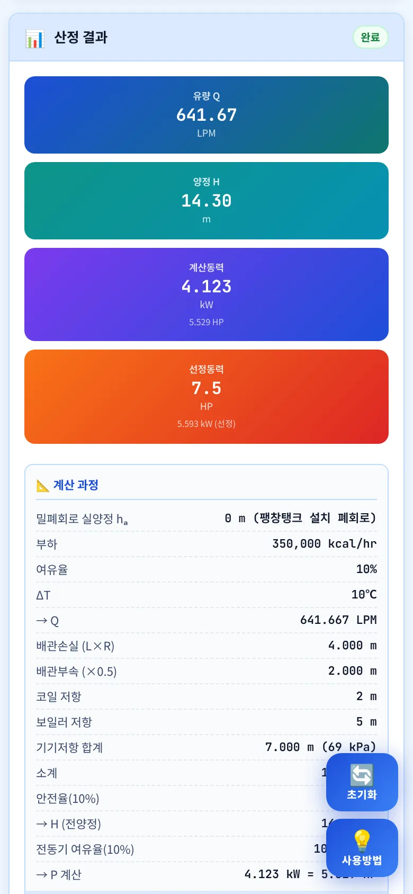
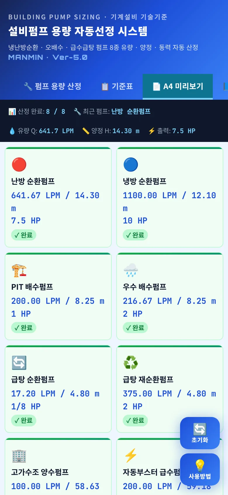
좁은 화면에서는 진행 상태 바가 4칸씩 두 줄, 입력 → 산정 기준 → 결과가 한 줄로 쌓입니다. 탭 막대는 다른 MANMIN 도구와 같이 한 줄이며 좌우로 밀어 「매뉴얼」까지 볼 수 있습니다.
04기술기준 해설
4-1. 근거 체계
| 근거 | 내용 |
|---|---|
| 별표 1 2.6(4) | 판형 열교환기의 손실수두는 70 kPa 이하 |
| 별표 1 2.8 | 펌프효율은 KS 규격 효율 이상 · 장비일람에 명기(1) / 순환펌프는 예비펌프(2) / 사용동력 · 전원 기입(3) / 제어방식 명시(4) / 대수제어면 예비 생략 가능(5) |
| 별표 5 2.1.3 | 고가수조용 양수펌프 = 시간최대 예상급수량 · 예비펌프 교대 운전 / 자동부스터 = 순간최대 예상급수량 · 2대 이상 |
| 별표 5 2.1.6 · 2.1.7 | 위생기구 최저 필요 급수압력 표 2 / 수압 550 kPa 이상이면 감압밸브 또는 급수 조닝 |
| 별표 5 2.2.6 | 급탕순환펌프 유량 = 환탕유량, 양정 = 마찰손실수두가 가장 큰 순환관로 / 급탕하지 않을 때 정지 가능 |
| 별표 8 2.5(2) | 환탕관의 유량은 급탕배관의 열손실을 구하여 계산 |
| 별표 6 2.1.3 | 배수펌프 유량 · 압력은 예상 사용 요구량에 적합 / 고형물 Ø50 · Ø25 / 집수정 Ø450 × 600 / 상시 유입 2대 이상(1대 예비) |
| 별표 7 2.2.5 | (오수정화시설) 배수펌프는 시간최대 처리 수량을 30분 이내 배출 · 예비펌프 — PIT 30분 검증에 준용 |
| 에너지절약설계기준 제8조제2호나목 | 펌프는 KS B 6318 · 7501 등 표시인증제품 또는 KS 효율 이상(의무) |
| 에너지절약설계기준 제9조제4호 | 순환펌프 대수 · 가변속 제어, 급수펌프 가변속 제어, 효율 높은 펌프(권장) |
기계설비 기술기준 국토교통부 고시 제2021-851호(제2026-360호로 타법개정, 2026. 7. 8. 시행) · 건축물의 에너지절약설계기준(2026. 7. 8. 시행) · 관련 KDS(각 별표 1.3): KDS 31 25 10 열원기기 · 31 30 15 급수 · 31 30 20 급탕 · 31 30 25 배수통기 · 31 30 35 우수
4-2. 동력 산정식
예전 판은 Q × H ÷ (4500 × η)로 계산해 HP로 표시했습니다. 4500은 프랑스 마력(PS, 0.7355 kW) 상수라 HP · kW 환산과 1.4 % 어긋났습니다. v5.0.1부터 kW로 계산하고 HP로 바꿉니다.
4-3. 냉난방 순환펌프
냉동기 · 보일러 · 열교환기의 손실수두는 순환펌프 양정에 반영합니다(별표 1 2.2.1(2) · 2.2.2(1)). 판형 열교환기를 쓰면 그 손실수두가 70 kPa 이하인지 확인하십시오(별표 1 2.6(4)).
4-4. 오·배수 펌프
기술기준은 배수펌프 유량을 「예상 사용 요구량에 적합」하도록만 정합니다(별표 6 2.1.3(4)①). 이 앱의 PIT 200 %는 유입 변동 · 이물 막힘을 고려한 MANMIN 참고값이며, 집수조를 30분 안에 비우는지는 오수정화시설 배수펌프 기준(별표 7 2.2.5)을 준용해 확인합니다. 우수 배수펌프는 시간최대 강수량 × 면적으로 유량을 구합니다.
4-5. 급탕 순환펌프
예전 판의 「시간최대급탕량 ÷ 2」 · 「시간최대급탕량 ÷ (60 − 5)」는 기준에 없는 식이었고, 뒤의 식은 단위(ℓ/h ÷ ℃)도 맞지 않아 v5.0.1에서 열손실 · 열량 기준으로 바꿨습니다.
4-6. 급수 펌프·수압
| 위생기구(별표 5 2.1.6 표 2 발췌) | 최저필요수압 |
|---|---|
| 욕조 · 세면기 · 싱크(가정용) · 세정탱크 대변기 · 호스 수도꼭지 | 55 kPa (5.6 m) |
| 샤워기 | 70 kPa (7.1 m) |
| 소변기 밸브 · 대변기 세정밸브 | 100 kPa (10.2 m) |
| 샤워기(압력식 · 온도감지 혼합밸브) | 130 kPa (13.3 m) |
4-7. 효율·제어방식
펌프 효율은 KS 규격 효율 이상으로 하고 장비일람에 적습니다(별표 1 2.8(1) · 에너지절약설계기준 제8조제2호나목). 앱의 기본 효율(순환 0.40 · 급탕 0.35 · 급수 0.55)은 소형 펌프를 가정한 MANMIN 참고값이므로, 선정 모델의 KS 효율 · 성능곡선 값으로 바꿔 넣으십시오. 대수 · 가변속 제어는 에너지절약설계기준 제9조제4호의 권장사항이며, 예전 판에 있던 「EPI +2~3점」 표시는 근거를 확인하지 못해 v5.0.1에서 뺐습니다.
4-8. 계산 범위·한계
| 항목 | 내용 |
|---|---|
| 계산하는 것 | 8종 펌프의 유량 · 전양정 · 축동력(kW) · 선정 마력 · 참고 구경 · 전원 · 수량, 기기저항 70 kPa · 집수조 30분 · 토출압 550 kPa 확인 |
| 계산하지 않는 것 | 배관 마찰손실 상세 계산(관경별 R), 흡입 양정 · NPSH, 성능곡선 운전점, 냉각수 펌프, 팽창탱크, 소방펌프 |
| 계수 | 여유율 · 단위손실 · 부속 50 % · 효율 기본값 · PIT 200 % · 30 W/m는 MANMIN 참고값 |
4-9. v5.0.1 근거·계산 정정 (2026-10-14)
| 항목 | 기존 | 정정 |
|---|---|---|
| 헤더 근거 | 고시 제2021-851호 | 제2026-360호 타법개정(2026.7.8.) 표기 |
| 관련 KDS | 31 20 20 냉난방 · 31 25 10 급탕 · 31 25 30 오배수 | 31 25 10 열원기기 · 31 30 20 급탕 · 31 30 25 배수통기(별표 1.3 인용) |
| 기계설비법 | 「제정 2020.06.09 / 시행 2021.04.17」 | 현행 법률 제17453호(2020.6.9. 공포 · 시행) 제14조 |
| 70 kPa | 「보고서 3조」 | 별표 1 2.6(4) 판형 열교환기 손실수두 |
| PIT 200 % | 「200% 기준 (별표 6)」 | MANMIN 참고값 · 30분은 별표 7 2.2.5 준용 |
| 급탕 순환 Q | 시간최대급탕량 ÷ 2 ÷ 60 | 배관 열손실 ÷ (60 × Δt) — 별표 5 2.2.6(1) · 별표 8 2.5(2) |
| 급탕 재순환 Q | 시간최대급탕량 ÷ (60 − 5) (단위 불일치) | 가열장치 출력 ÷ (60 × Δt) |
| EPI | 「+EPI 3점 · 2점」 · 고시 제2023-104호 | 에너지절약설계기준 제8조제2호나목 · 제9조제4호 |
| 550 kPa | 최저필요수압 hₒ로 판정 · 「초과」 | 자동부스터 토출압으로 판정 · 「이상」(별표 5 2.1.7) |
| 우수 효율 | 입력과 관계없이 0.30 | 입력값 사용 |
| 동력 | Q × H ÷ (4500 × η)을 HP로 표시 | kW = Q × H ÷ (6120 × η) → HP |
| 0 입력 | 여유율 · 효율 · ΔT · hₒ 등 0 → 기본값 | 빈칸만 기본값 |
v5.0.3 추가 정정 — ① 전동기 여유율 경고의 「가이드라인 3조」 · 「20 % 초과는 에너지 절약 원칙 위반 · 금지」는 근거가 없어 「MANMIN 권장 10~15 %」로 고쳤습니다(15 % 경고는 유지). ② 기준표의 출처 없는 지역 강수량 5곳(서울 120 · 부산 130 · 서산 141 · 광주 115 · 대구 110)을 기상청 ASOS 69곳(서울 118.6 · 부산 106.0 · 서산 114.9 · 광주 86.5 · 대구 80.0 등)으로 바꾸고 우수 입력에 지역 선택을 넣었습니다. ③ 대수분할 제어는 운전 대수로 유량을 나눠 펌프 1대를 선정합니다.
예전 판의 급탕 순환 · 재순환 결과와 부스터 550 kPa 판정은 다시 산정하십시오. 나머지 펌프의 동력은 약 1.4 % 작아지며, 표준 마력 경계에 걸린 경우 선정 마력이 한 단계 내려갈 수 있습니다.
05실무 작업 방법
5-1. 단계별 절차
| 단계 | 내용 |
|---|---|
| ① 계통 정리 | 열원 · 공조기 · 위생 계통도를 보고 펌프마다 담당 부하 · 급수량 · 배수량을 정합니다 |
| ② 유량 | 부하 ÷ ΔT(냉난방), 유입량 · 강수량(배수), 열손실 · 가열 열량(급탕), 시간 · 순간최대 예상급수량(급수) |
| ③ 양정 | 최원단 관로의 배관 길이 · 단위손실과 기기저항, 실양정 · 최저필요수압을 넣습니다 |
| ④ 선정 | 계산 kW · 선정 HP를 보고 제조사 성능곡선에서 운전점을 확인합니다. 효율은 선정 모델 값으로 다시 넣습니다 |
| ⑤ 출력 | 8종 A4 산출서를 PDF로 남겨 장비일람 · 설계도서에 붙입니다 |
5-2. 장비일람 반영 전 확인
| 항목 | 확인 |
|---|---|
| 효율 | KS 규격 효율 이상 · 장비일람에 명기(별표 1 2.8(1) · 에너지절약설계기준 제8조제2호나목) |
| 예비 · 제어 | 순환펌프 예비(2.8(2)) · 제어방식 명시(2.8(4)) · 대수제어면 예비 생략 가능(2.8(5)) |
| 전동기 | 사용동력 · 전원 기입, 비상전원 필요 여부(2.8(3)) — 배수 · 양수펌프 |
| 수압 | 자동부스터 토출압 550 kPa 이상이면 감압밸브 · 조닝(별표 5 2.1.7) |
| 배수 | 집수정 Ø450 × 600 이상 · 고형물 · 역류방지 · 차단밸브(별표 6 2.1.3) |
| 펌프 주변 배관 | 방진이음 · 압력계 · 스트레이너 · 흡입 직관(별표 8 2.1.3(5)) |
5-3. 예제 B — 부스터 hₐ 25 m
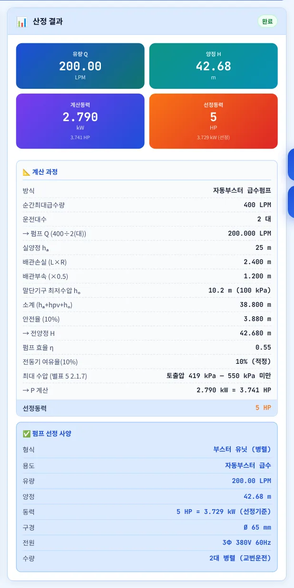
1- 1H 42.68 m · 5 HP · 550 kPa 미만
예제 A와 같은 조건에서 실양정만 40 m → 25 m로 낮추면 전양정 42.68 m(≈ 419 kPa)로 550 kPa 아래로 내려가 경고가 사라지고, 선정동력도 7.5 → 5 HP로 줄어듭니다. 고층 건물은 저층부를 감압밸브나 별도 존으로 나누는 조닝을 함께 검토하십시오.
06문제 해결·FAQ
| 증상 | 해결 |
|---|---|
| 결과가 나오지 않아요 | 부하 · 유량 · 열손실 등 첫 입력란이 비어 있으면 계산하지 않습니다. 효율 · ΔT에 0을 넣으면 「입력하세요」 안내가 뜹니다 |
| 서브탭을 바꾸니 입력이 지워졌어요 | 난방 ↔ 냉방 전환 때 부하 · ΔT · 기기저항이 그 용도의 기본값으로 다시 채워집니다. 결과는 따로 저장되어 남습니다 |
| 「기기저항 합계 70 kPa 초과」 | 코일 + 보일러(냉동기) 저항 합계가 70 kPa를 넘었습니다. 판형 열교환기라면 손실수두 70 kPa 이하인지 확인하십시오(별표 1 2.6(4)) |
| 「최대급수압력 550 kPa 이상」 | 자동부스터 토출압이 550 kPa 이상입니다. 감압밸브 또는 급수 조닝을 계획하십시오(별표 5 2.1.7) |
| 예전 산정서와 급탕 순환 유량이 달라요 | v5.0.1에서 급탕량 기준 식을 열손실 기준으로 바꿨습니다(4-5) |
| 선정 마력이 한 단계 줄었어요 | 동력 계산을 kW 기준으로 바로잡아 약 1.4 % 작아졌습니다(4-2) |
| 대수분할 제어를 골랐더니 유량이 줄었어요 | 대수제어는 n대가 유량을 나눠 맡으므로 펌프 1대 유량 = 전체 ÷ n으로 선정합니다(v5.0.3). 전체 유량은 계산 과정에 함께 나옵니다 |
| 「20+」로 나와요 | 20 HP를 넘는 대형 펌프입니다. 제조사 선정 프로그램으로 따로 확인하십시오 |
| 화면이 예전 판이에요 | 새로 고침(Ctrl+F5) 또는 앱을 닫았다 다시 여십시오 |
부록
A1. 예제 입력값 (예제 A — 업무시설 10층 사옥)
| 펌프 | 입력 |
|---|---|
| 난방 순환펌프 | 난방 부하 350,000 kcal/h · 여유율 10 % · ΔT 10℃ · 왕복 200 m × 0.02 mAq/m · 코일 2 m · 보일러 5 m · 안전율 10 % · η 0.40 · 전동기 여유율 10 % |
| 냉방 순환펌프 | 냉방 부하 300,000 kcal/h · ΔT 5℃ · 냉동기 3 m (그 외 난방과 같음) |
| PIT 배수펌프 | 시간 최대 유입 100 LPM × 200 % · 집수조 3,000 ℓ · 층고 6 m · 배관 20 m × 0.05 · 안전율 10 % · η 0.40 |
| 우수 배수펌프 | 100 mm/h × 260 ㎡ ÷ 2대 · 양정 조건은 PIT와 같음 |
| 급탕 순환펌프 | 배관 200 m × 30 W/m · Δt 5℃ · R 20 mmAq/m × I 120 m × (1 + K 1.0) · η 0.35 |
| 급탕 재순환펌프 | 가열장치 출력 225,000 kcal/h · Δt 10℃ · 양정 조건은 순환펌프와 같음 |
| 고가수조 양수펌프 | 시간최대 예상급수량 6,000 ℓ/h · hₐ 45 m · 배관 60 m × 0.03 · hₒ 5.6 m · 안전율 10 % · η 0.55 |
| 자동부스터 급수펌프 | 순간최대 예상급수량 400 LPM ÷ 2대 · hₐ 40 m · 배관 80 m × 0.03 · hₒ 10.2 m(세정밸브) · 안전율 10 % · η 0.55 |
A2. 예제 결과 8종
| 펌프 | Q (LPM) | H (m) | 계산 kW | 선정 HP | 구경 mm | 수량 |
|---|---|---|---|---|---|---|
| 난방 순환펌프 | 641.67 | 14.3 | 4.123 | 7.5 | Ø 80 | 2대 (1대 예비) |
| 냉방 순환펌프 | 1,100 | 12.1 | 5.981 | 10 | Ø 100 | 2대 (1대 예비) |
| PIT 배수펌프 | 200 | 8.25 | 0.741 | 1 | Ø 50 / 65 | 2대 (순차기동/교대운전) |
| 우수 배수펌프 | 216.67 | 8.25 | 0.803 | 2 | Ø 50 / 65 | 2대 (순차기동/교대운전) |
| 급탕 순환펌프 | 17.2 | 4.8 | 0.042 | 1/8 | Ø 25 | 2대 (1대 예비) |
| 급탕 재순환펌프 | 375 | 4.8 | 0.924 | 2 | Ø 65 | 2대 (1대 예비) |
| 고가수조 양수펌프 | 100 | 58.63 | 1.916 | 3 | Ø 50 | 2대 (1대 예비) |
| 자동부스터 급수펌프 | 200 | 59.18 | 3.868 | 7.5 | Ø 65 | 2대 병렬 (교번운전) |
예제 B: 자동부스터 실양정 25 m → H 42.68 m · 2.790 kW · 5 HP · 550 kPa 미만.
A3. 버전 변경 내역
| 버전 | 내용 |
|---|---|
| Ver-5.0 · v5.0.3 (2026-10-14) | 전동기 여유율 경고 문구(근거 없는 「가이드라인 3조」 · 「20 % 초과 금지」 → MANMIN 권장 10~15 %), 지역 강우량 기상청 ASOS 69곳(우수관경 자료), 냉난방 대수제어 운전 대수 · 유량 분할 |
| Ver-5.0 · v5.0.2 (2026-10-14) | 사용자 매뉴얼 연결(탭 막대 「📘 매뉴얼」) |
| Ver-5.0 · v5.0.1 (2026-10-14) | 기술기준 별표 1 · 5 · 6 · 7 · 8 · 에너지절약설계기준 원문 대조 — 근거 표기 8건 정정, 급탕 순환 · 재순환 유량식 교체, 550 kPa 판정 · 우수 효율 · 동력 단위 · 0 입력 정정(4-9) |
| Ver-5.0 (2026-09) | 디자인 통일(헤더 · 탭 막대 · 요약 스트립), A4 미리보기 · JPG 저장, 오프라인 캐시 개선 |
A4. 용어
| 용어 | 뜻 |
|---|---|
| 전양정 H | 펌프가 물에 주는 수두(m) — 실양정 + 손실수두 + 필요 압력 |
| 실양정 hₐ | 흡수면에서 토출 목표점까지의 높이 차(밀폐 순환계통은 0) |
| 축동력 | 펌프 축에 필요한 동력(kW) = ρgQH ÷ η |
| 전동기 여유율 | 축동력에 더하는 여유(α) — 과부하 · 성능 저하 대비 |
| 순간최대 예상급수량 | 가장 많이 쓰는 순간의 급수량(LPM) — 부스터 유닛 유량 |
| 환탕유량 | 급탕배관 열손실을 보상하려고 돌려보내는 유량 |
| 급수 조닝 | 높이별로 급수 계통을 나눠 수압을 550 kPa 이하로 제한하는 방법 |